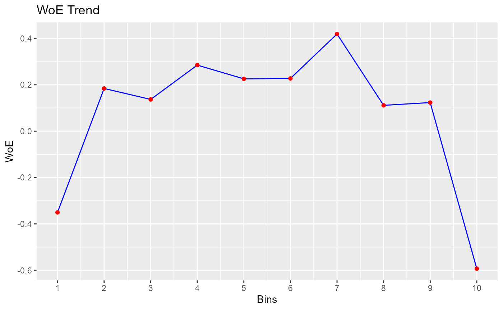

Bin continuous data using winsorized method.
Usage
rbin_winsorize(
data = NULL,
response = NULL,
predictor = NULL,
bins = 10,
include_na = TRUE,
winsor_rate = 0.05,
min_val = NULL,
max_val = NULL,
type = 7,
remove_na = TRUE
)
# S3 method for class 'rbin_winsorize'
plot(x, print_plot = TRUE, ...)Arguments
- data
A
data.frameortibble.- response
Response variable.
- predictor
Predictor variable.
- bins
Number of bins.
- include_na
logical; if
TRUE, a separate bin is created for missing values.- winsor_rate
A value from 0.0 to 0.5.
- min_val
the low border, all values being lower than this will be replaced by this value. The default is set to the 5 percent quantile of predictor.
- max_val
the high border, all values being larger than this will be replaced by this value. The default is set to the 95 percent quantile of predictor.
- type
an integer between 1 and 9 selecting one of the nine quantile algorithms detailed in
quantile()to be used.- remove_na
logical; if
TRUENAs will removed while calculating quantiles- x
An object of class
rbin_winsorize.- print_plot
logical; if
TRUE, prints the plot else returns a plot object.- ...
further arguments passed to or from other methods.
Examples
bins <- rbin_winsorize(mbank, y, age, 10, winsor_rate = 0.05)
bins
#> Binning Summary
#> ------------------------------
#> Method Winsorize
#> Response y
#> Predictor age
#> Bins 10
#> Count 4521
#> Goods 517
#> Bads 4004
#> Entropy 0.51
#> Information Value 0.1
#>
#>
#> cut_point bin_count good bad woe iv entropy
#> 1 < 30.2 723 112 611 -0.3504082 0.0224390979 0.6219926
#> 2 < 33.4 567 55 512 0.1839852 0.0039536848 0.4594187
#> 3 < 36.6 573 58 515 0.1367176 0.0022470488 0.4728562
#> 4 < 39.8 497 44 453 0.2846962 0.0079801719 0.4315480
#> 5 < 43 396 37 359 0.2253982 0.0040782670 0.4478305
#> 6 < 46.2 461 43 418 0.2272751 0.0048235624 0.4473095
#> 7 < 49.4 281 22 259 0.4187793 0.0092684760 0.3961315
#> 8 < 52.6 309 32 277 0.1112753 0.0008106706 0.4801796
#> 9 < 55.8 244 25 219 0.1231896 0.0007809490 0.4767424
#> 10 >= 55.8 470 89 381 -0.5928433 0.0456442813 0.7001343
# plot
plot(bins)
